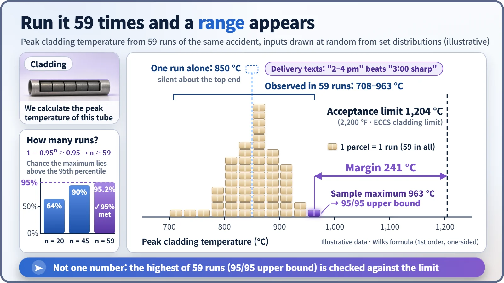
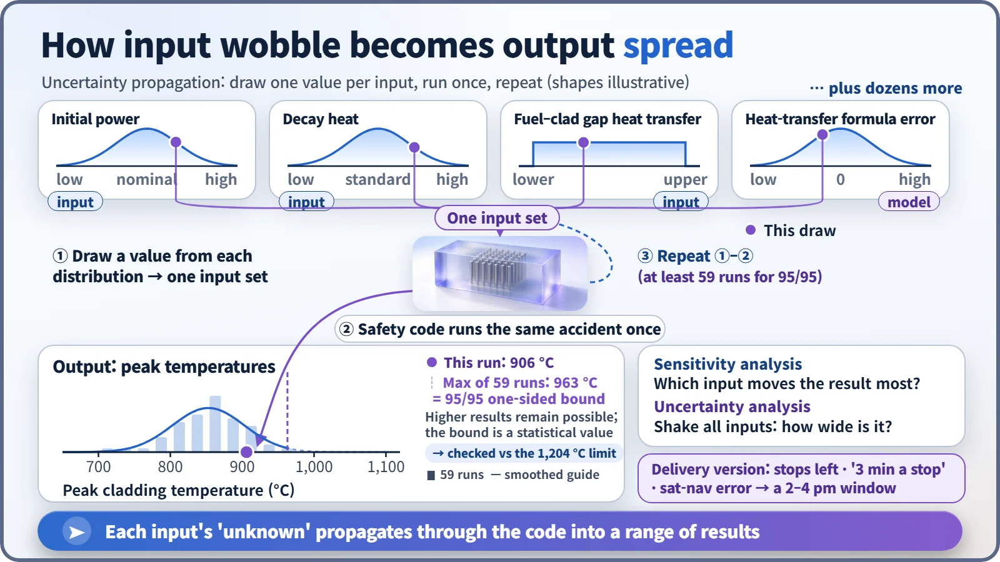

Modeling, Simulation & Computation · 261
Why Your Parcel Arrives "Between 2 and 4 pm" — The Case for Uncertainty Analysis in Nuclear Safety Calculations
A delivery window is more believable than an exact time, and a safety calculation that states its own uncertainty is more trustworthy than a single number.
A nuclear safety calculation should not answer with one number but with a range, and with how far that range can be trusted. Uncertainty analysis tracks how the unknowns in inputs, models and measurements spread into the result; with the Wilks method, 59 randomly sampled runs give a 95/95 upper bound that is compared with the acceptance limit. [1]
A delivery text you can actually believe
Imagine your delivery text reads: "Your parcel will arrive at exactly 3:00 pm." Nice, at first. But 3:00 comes and goes, and the box finally shows up at 3:40. Will you trust that company's "exactly" next time? A text that says "arriving between 2 and 4 pm" looks less precise, yet it is far more trustworthy: the company has priced in the things it doesn't know.
Safety calculations for nuclear power plants wrestle with the same problem. The tool that lets a calculation answer with a range instead of a single number is uncertainty analysis.
Why "exactly 3:00" is the less believable answer
A delivery time wobbles for three reasons: the starting conditions (how many stops are ahead of yours, how long the driver waits for each lift), the method of calculation (the driver's "three minutes per stop" rule is itself a bit off), and measurement (the sat-nav's traffic data doesn't quite match the road). Stack them together and the arrival time has to spread out.
A nuclear plant calculation has exactly the same three sources.
- Inputs: the reactor's power just before an accident is read from instruments, and that reading has its own error. That is why an old conservative rule in the United States required calculations to assume power 2% higher than nominal. Decay heat (the heat that keeps coming out after shutdown) and heat transfer across the gap between the fuel and its metal cladding are not exact either.
- Models: how strongly boiling water pulls heat away is calculated with approximate formulas derived from experiments, and they never match the test data perfectly.
- Measurements and data: the instruments on the test rigs that produced those formulas had errors too.
Uncertainty analysis works out how much these "don't-know" amounts spread into the result, and states the result as a range together with how much confidence it deserves. The way wobble in the inputs travels through the calculation and becomes spread in the output is called uncertainty propagation. [2]
One number can't tell you how much margin you have
In a calculation that assumes a large accident in which cooling water escapes, the key output is the peak cladding temperature. US regulations require it to stay at or below 2,200 °F, which is 1,204 °C (other criteria, such as oxidation, are checked as well), and South Korea uses the same temperature limit. [3]
Suppose a single run gives 850 °C, leaving 350 °C to spare. Time to relax? Not yet. Nudge the inputs and the answer might be 800 °C, or 950 °C. Like the "exactly 3:00" text, one number says nothing about how far the upper tail reaches. That is why the US rule as revised in 1988 says that a calculation with realistic models must quantify its uncertainty and show a high probability that the result will not exceed the limit. [3]
What you see when you draw 59 times
Building the range is surprisingly simple:
- Give every uncertain variable a range and a distribution. There are usually dozens, backed by experiments, operating data and expert judgment.
- Draw one value at random from each distribution to form one set of inputs.
- Run the code once with that set and get one peak temperature.
- Repeat many times.
How many times? The statistician Samuel Wilks supplied the answer in 1941: [4]
1 − 0.95ⁿ ≥ 0.95 → n ≥ 59
Each run draws its inputs afresh and independently. 0.95ⁿ is the probability that all n results fall below the line that 95% of all possible results lie under, so 1 minus that is the probability that the largest of the n results lies above that line. The smallest n for which this exceeds 95% is 59; with 20 runs you get only 64%, with 45 runs 90%. The highest of 59 runs can be said, with 95% confidence, to cover at least 95% of the results, so it is called the 95/95 upper bound. And the number of runs does not depend on how many variables there are.

Where did that spread come from?
Each parcel in the figure is the same accident calculated once with a different combination of inputs. These are not 59 different accidents: many small input wobbles pass through the calculation and gather into one output distribution.

Its similarly named cousin, sensitivity analysis, asks which input shakes the result the most. Uncertainty analysis asks how widely the result spreads when all inputs are shaken together. One gives a ranking of causes, the other the width of the result, and they are used as a pair.
Four misreadings of the word "uncertain"
"Large uncertainty means the calculation failed." No. The unknowns were put on the table as numbers instead of being hidden, which makes it the more rigorous calculation.
"95/95 means a 5% chance of exceeding the limit." No. The 95/95 bound is a generously placed upper end of the distribution of calculated results, and the verdict asks whether even that bound stays below 1,204 °C.
"59 runs and you're done." 59 is the minimum. Another approach runs the code 93 times and uses the second-highest value.
"A wide range makes the calculation useless." The width honestly shows what we know today. As experimental and operating data accumulate, the input distributions can narrow, and the result's width can shrink with them.
If the window closes before you leave
If you must leave the house at 4 pm, what matters is not the average arrival time but the end of the delivery window. Plant calculations work the same way: in the example, the maximum of the 59 runs, 963 °C, is what gets judged, leaving 241 °C to the 1,204 °C limit.
Key takeaways
Answer with a range instead of a single number and margin stops being a feeling and becomes a number. Uncertainty analysis is not a declaration that we trust the calculation less; it states, along with the answer, how far that answer can be trusted.